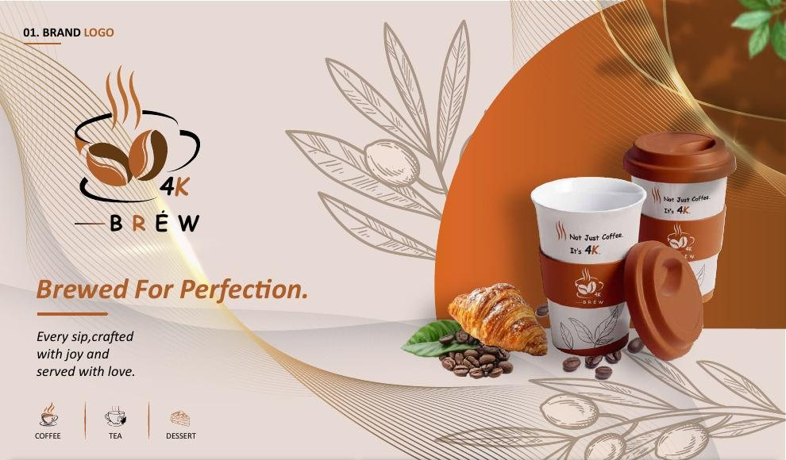

4K Brew
A warm, modern café identity: Brewed for Perfection. Every sip crafted with joy and served with love.
- Discipline
- Brand identity, café
- Scope
- Logo design, Logo variations, Packaging, Menu design, Signage, Uniforms, Social media
- Type
- Client brand project

Overview
4K Brew is a modern coffee brand built around premium quality, refined taste and a warm café experience. The identity combines contemporary design with the authentic character of coffee culture.
Challenge
The café needed one identity that could work for coffee, tea and dessert, look premium on a takeaway cup and still feel friendly enough for a neighbourhood café.
Solution
A cup-and-beans mark with a spaced BRÉW wordmark, in four versions: abstract, vintage badge, signature script and reverse. Black stands for quality, Bright Sienna for warmth and freshness, and Baker's Chocolate for roasted beans. The system runs across cups, bags, menus, a thank-you card, signage, staff uniforms and social posts, tied together with a hand-drawn leaf pattern.
Colour palette
- Baker's chocolate#603813
- Bright sienna#AF5E2A
- Soft amber#E4C98C
- Pale silver#CBBFB1
- Sea anemone#E7DAD5
- Hippie green#588157
Brand personality
- Premium
- Modern
- Warm
- Authentic
- Sophisticated
Want something like this for your brand?
Start a project